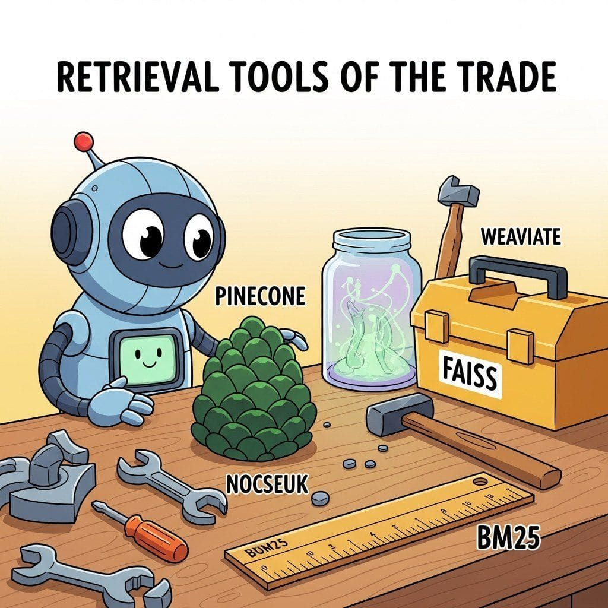

Big Picture
The retrieval and IE ecosystem has its own ladder of tools: vector databases (Pinecone, Weaviate, Qdrant, Milvus), embedding model libraries, RAG frameworks, knowledge-graph tooling, and evaluation suites for retrieval quality. This chapter is the practical reference.
Sections in This Chapter
- 36.1 Platforms Vector databases and hybrid search platforms (Pinecone, Weaviate, Qdrant, Milvus, pgvector, Elasticsearch, Vespa) with selection criteria and a decision tree.
- 36.2 Libraries and Frameworks Embedding clients, rerankers, orchestrators (LangChain, LlamaIndex, Haystack, DSPy), document parsers, and hybrid-retrieval helpers for production stacks.
- 36.3 Datasets and Benchmarks MS MARCO, BEIR, MTEB, MIRACL, HotpotQA, FRAMES, and the RAG-specific benchmarks plus live leaderboards retrieval engineers should track.
- 36.4 Models Closed-API and open-weight embedders (OpenAI text-embedding-3, Cohere Embed-4, Voyage, BGE-M3, NV-Embed, Stella, ColPali) plus rerankers, with dimensions, context, and license.
- 36.5 External Reading and Communities Textbooks (Manning et al., Lin et al.), essential papers, blogs, conferences (SIGIR, ECIR, ACL, EMNLP), Discord and Reddit communities, and a weekly reading cadence.
What's Next?
This chapter begins with Section 36.1: Platforms. Each section builds on the previous one, so we recommend reading them in order.